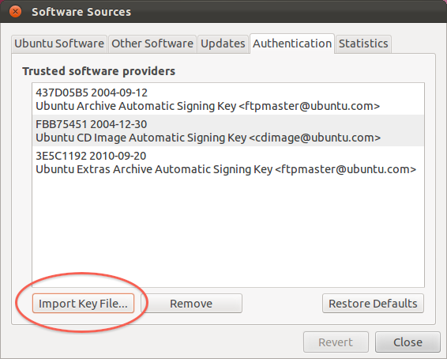
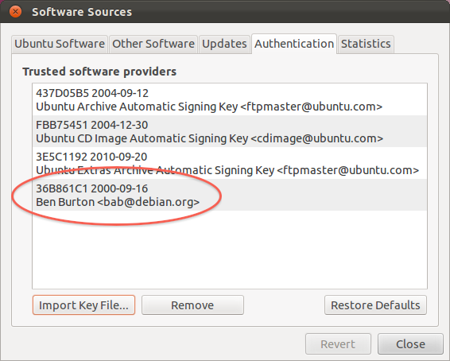
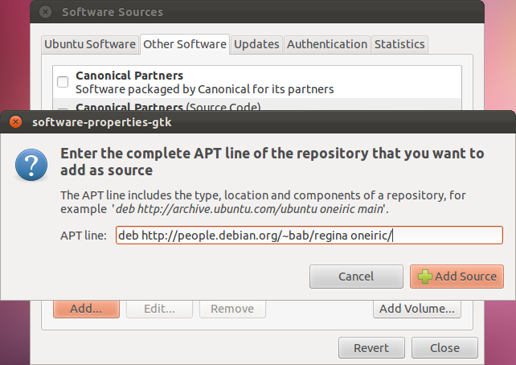
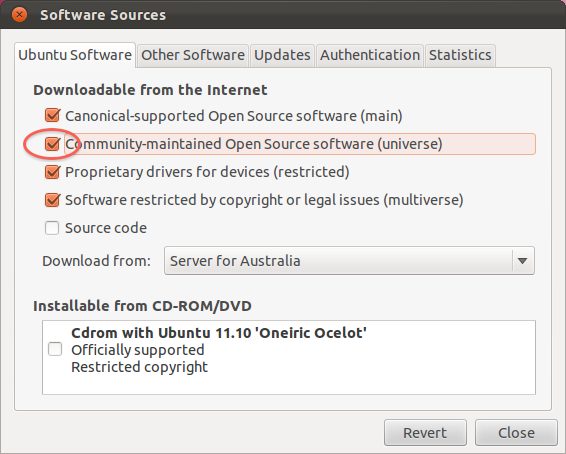
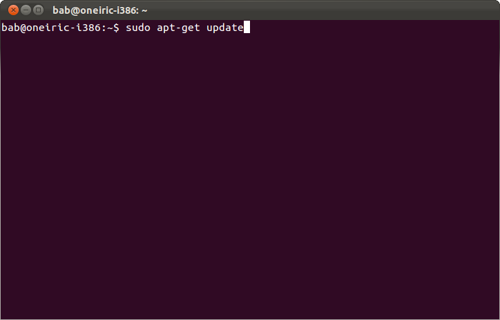
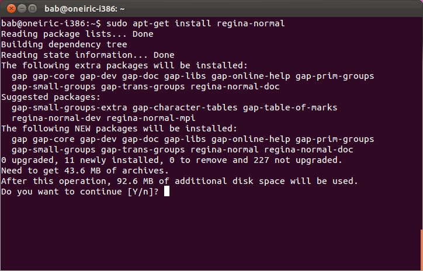

If you use Oneiric Ocelot (the Ubuntu 11.10 release), you can obtain packages from the official Regina repository on people.debian.org.
This means that Ubuntu will automatically fetch dependencies for you, and your package manager will know when new versions of Regina are released.
Add Regina's location to your list of repositories. To do this, open the Ubuntu Software Centre and select Edit → Software Sources.
Under Authentication, import Regina's cryptographic signing key. This helps keep your machine secure, and Ubuntu may refuse to install Regina without it. You can download Regina's cryptographic signing key here.

When you import this key file, it should show up in the list of trusted software providers as “Ben Burton <bab@debian.org>”. After the import, you can delete regina-key.txt if you like.

Under Other Software, click the Add... button. When Ubuntu asks you for an APT line, type:
deb http://people.debian.org/~bab/regina oneiric/

Under Ubuntu Software, enable the Community-Maintained Open Source Software (universe) if this has not been done before.

Unfortunately, the 11.10 Ubuntu Software Centre has a bug which means you will need to finish the installation by typing commands into a terminal window.
Update the list of available packages. In a terminal window, type:
sudo apt-get update

Now you can install Regina. In the same terminal window, type:
sudo apt-get install regina-normal

If you are a C++ programmer and you wish to build Regina into your own projects, you should also install the package regina-normal-dev.
If you want the MPI-enabled utilities for use on high-performance clusters, you should install the package regina-normal-mpi.
You might notice that Oneiric Ocelot already offers Regina as part of its universe section. However, this is the older version 4.6. For the latest version of Regina, you should follow the steps outlined above.